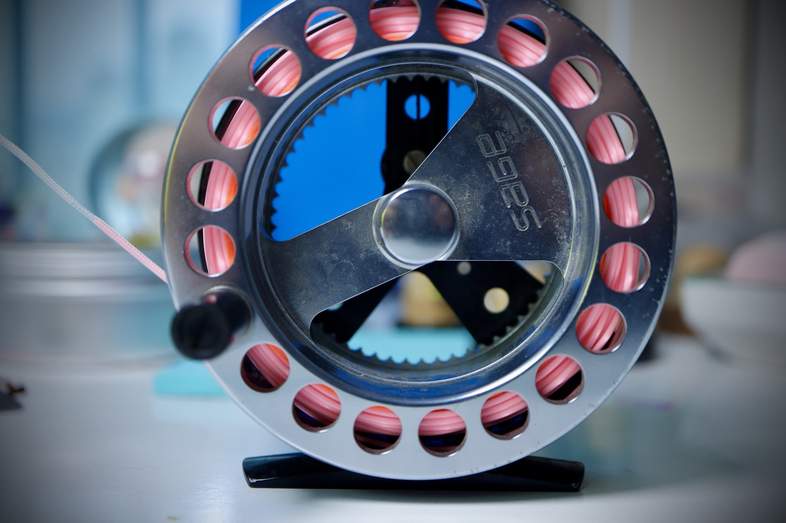
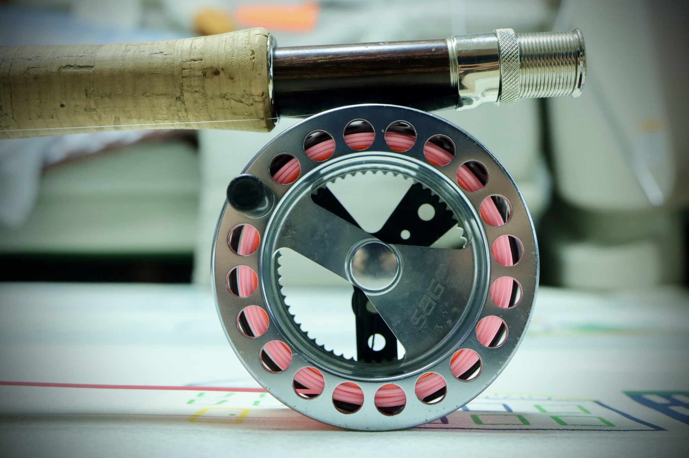
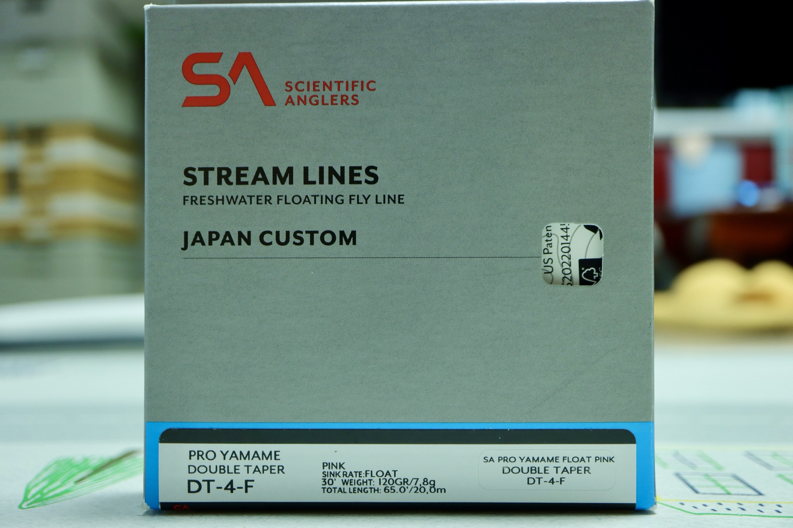
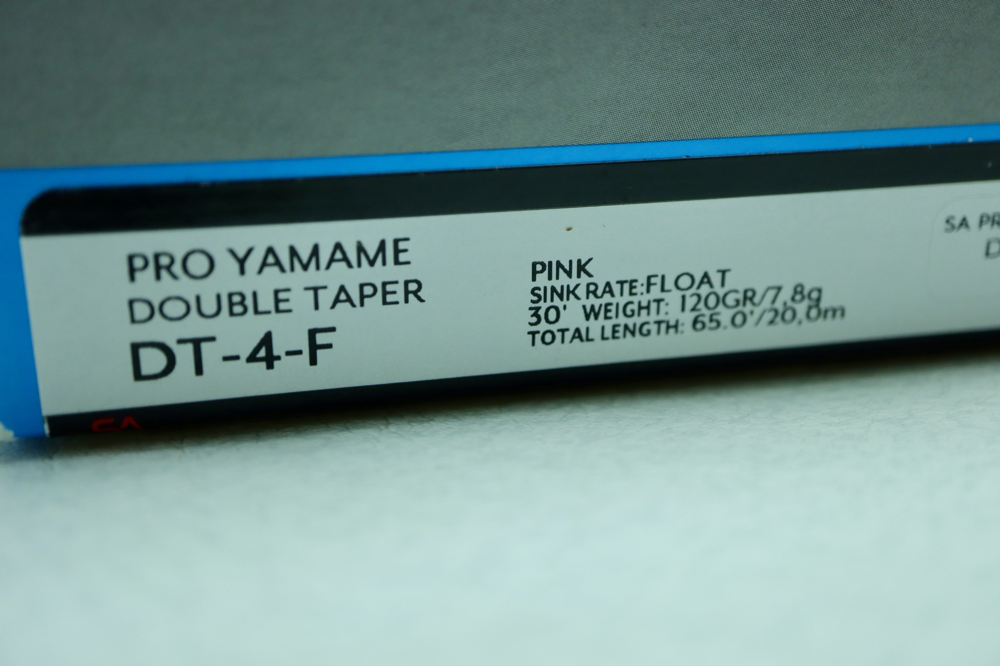
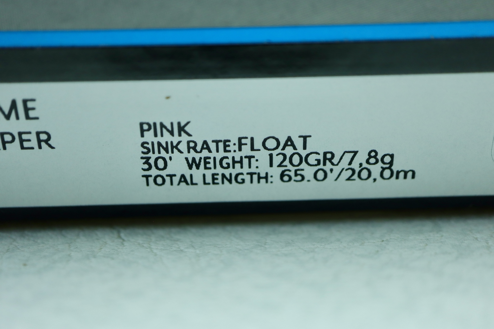
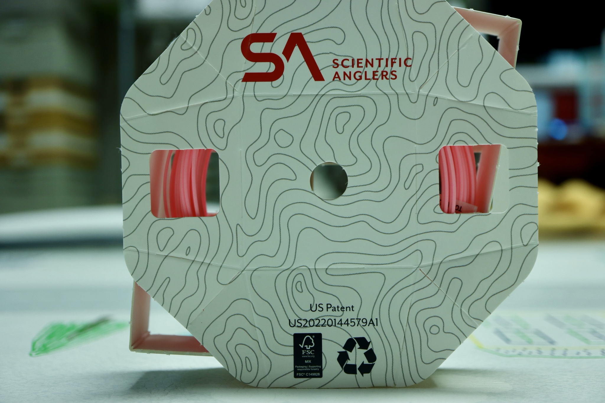
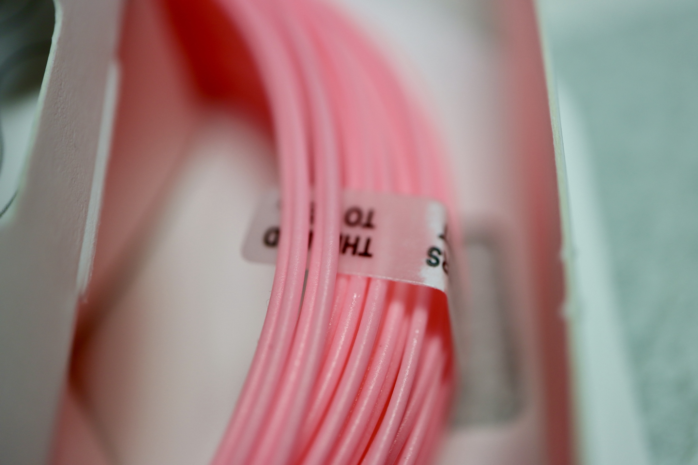
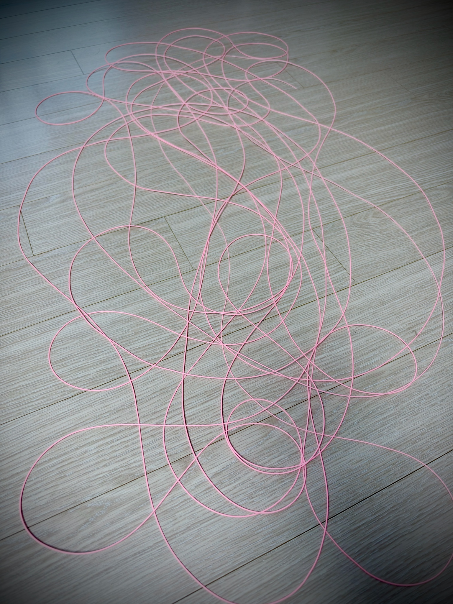
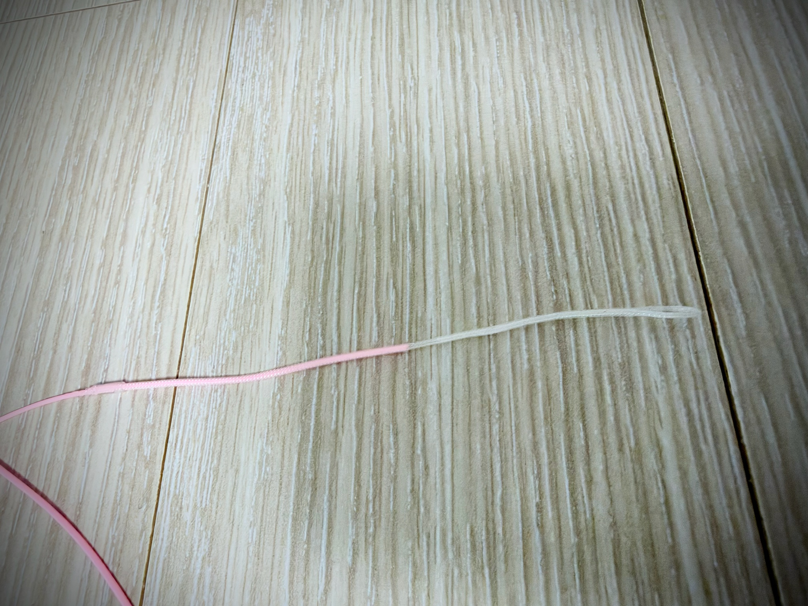

LINE SPECIFICATIONS
TIEMCO JAPAN CUSTOM · SA USA우연한 인연, 그리고 시작된 페어링의 여정
우연찮은 기회에 내 손에 들어오게 된 SAGE LAUNCH 386-4. 8피트 6인치, 3번 로드. 손에 쥐는 순간 전해지는 블랭크의 감각은 참 매력적이었지만, 플라이 로드의 진정한 생명력은 꼭 맞아떨어지는 '최적의 라인'을 물려주었을 때 비로소 완성되는 법이다. 어떤 라인을 올려야 이 로드가 가진 고유의 벤딩과 반발력을 온전히 이끌어낼 수 있을까. 끝없는 라인 맞추기, 즉 나만의 페어링(Pairing) 여정이 시작되었다.

DT 라인의 재발견: 왜 다시 더블 테이퍼인가
그 고민의 와중에 다시 한번 손에 쥐고 던져본 DT(Double Taper) 라인. 요즘 유행하는 공격적인 웨이트 포워드(WF) 라인들이 쏘아져 나가는 시원함이 있다면, DT 라인에는 특유의 부드럽고 정직한 턴오버, 그리고 수면 위를 섬세하게 다듬는 단정한 멘딩 능력이 있었다.
이미 DT4F 규격으로 DT 라인만이 지닌 독보적인 매력과 능력을 충분히 경험해보았기에, 3번 로드에 4번 DT를 올리는 '+1번수 오버라인' 세팅이야말로 런치 386-4의 허리를 가장 기분 좋게 먹여줄 최상의 조합이라는 확신이 섰다.


그렇게 내 손에 쥐게 된 핫핑크 라인
고민 끝에 낙점한 것은 사이언티픽 앵글러스(SA)의 재팬 커스텀 모델, SA 프로페셔널 야마메 DT-4-F 핑크. 때마침 매력적인 엔저 환율 덕분에 아마존 재팬(Amazon JP)에서의 구매 타이밍도 기가 막히게 맞아떨어졌다. 바다를 건너 마침내 내 방 마루에 도착한 패키지를 뜯고, 쨍한 핫핑크 컬러의 라인을 마주하는 순간 이 매칭에 대한 기대감으로 가슴 한구석이 뜨거워졌다.
엔저 기조가 이어지는 시점에서 일본 내수용 라인(Japan Custom)은 아마존 재팬 직구를 활용할 때 가격적 메리트가 대단히 높다. 배송 기간 역시 3~4일 안팎으로 신속해 주말 출조 준비에 손실이 없었다.


스펙에 담긴 세 가지 실전 설계 미학
이 라인은 단순히 예쁜 핑크색 라인이 아니다. 산천어(Yamame)라는 이름을 달고 나온 데는 계류와 스틸워터 근거리 현장을 꿰뚫어 본 세 가지 명확한 설계 사상이 녹아 있다.
65ft 쇼트 렝스 설계
한국이나 일본의 중소형 계류나 스틸워터 필드에서는 20m를 넘는 롱캐스팅을 할 일이 거의 없습니다. SA는 이 점에 착안해 불필요하게 뒤에 매달린 25~30ft의 러닝라인을 과감히 잘라냈습니다. 숏 로드용 소형 릴이나 캐퍼시티가 얕은 라지 아버 릴에도 백킹 라인을 무리하게 줄이지 않고 깔끔하게 감기며, 출조 후 20m 전량을 한 번에 풀어 세척하고 드레싱 왁스를 먹이기에도 극도로 수월합니다.
DT 구조의 경제성
양쪽 끝의 테이퍼 형상이 완벽히 대칭입니다. 한쪽 팁이 오랜 사용으로 마모되거나 코팅에 상처가 나면, 라인을 릴에서 풀어 반대로 뒤집어 감기만 하면 새 라인 한 통을 그대로 다시 쓰는 셈입니다. 실전성과 가성비를 완벽하게 양립시킨 영리한 구조입니다.
Yamame 테이퍼 밸런스
SA의 전설적인 클래식 명기 '프로페셔널(Professional)'의 검증된 테이퍼를 기반으로 튜닝되었습니다. 30피트 120그레인(7.8g)의 정직한 AFTMA 4번 무게를 품고 있어 5~10m 근·중거리에서 턴오버가 놀라울 만큼 안정적이며, 물살을 가르는 라인 멘딩이 뜻대로 척척 먹혀듭니다.
손끝으로 확인한 물성, 그리고 나만의 팁 커스텀
스풀에서 라인을 풀어 마루 바닥에 길게 늘어뜨려 보았다. 스프링처럼 또아리를 트는 잔류 코일링 없이, 바닥 위에 나긋나긋하고 차분하게 착 가라앉는다. 브레이디드 멀티필라멘트 코어 특유의 저온 유연성이 손끝에 고스란히 전해진다. 쌀쌀한 초겨울 저수지 수면 위에서도 라인이 구불거리지 않고 곧은 직선성을 유지해 줄 것이다.

야마메 라인은 표층 착수 충격을 줄이고 팁을 극도로 가늘게 유지하기 위해 공장형 웰디드 루프가 생략된 클래식 사양으로 나온다. 망설임 없이 끝단에 투명 브레이디드 슬리브 루프 커넥터를 직접 장착하고 말끔하게 마감 처리를 끝냈다. 가늘고 예민한 팁 고유의 착수성을 해치지 않으면서도 현장에서 리더를 손쉽게 루프-투-루프로 결합할 수 있는 나만의 실전형 세팅이 완성되었다.

물가에서 만날 설렘
우연히 찾아온 세이지 런치 386-4, 그리고 수많은 고민과 확신 끝에 맺어준 SA 야마메 DT-4-F 핑크.
물안개 자욱한 이른 아침이나 부슬비 내리는 흐린 날에도, 쨍한 핑크 라인이 수면을 가르며 날아갈 궤적과 로드 팁에 얹힐 묵직한 로딩의 감각이 눈앞에 선하다. 이미 검증된 DT의 능력에 65ft의 기동성과 핑크의 시인성이 더해진 이 완벽한 페어링. 이제 남은 것은 물가로 나가 첫 캐스팅을 얹어보는 일뿐이다.